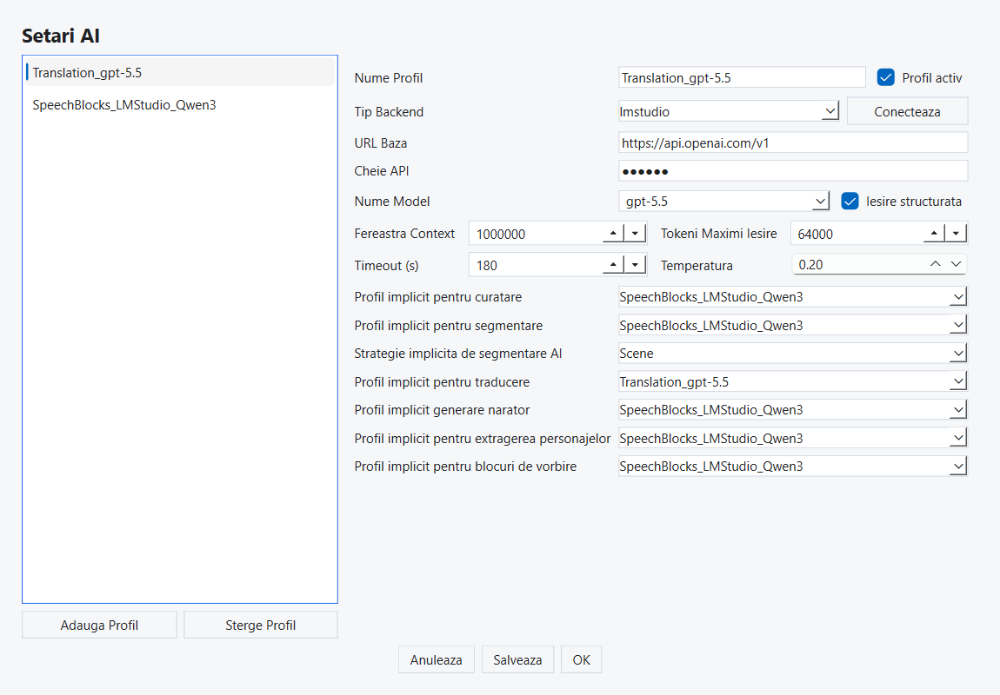
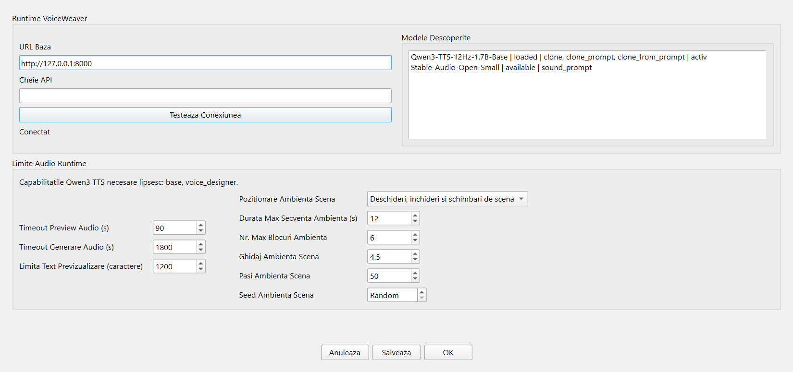
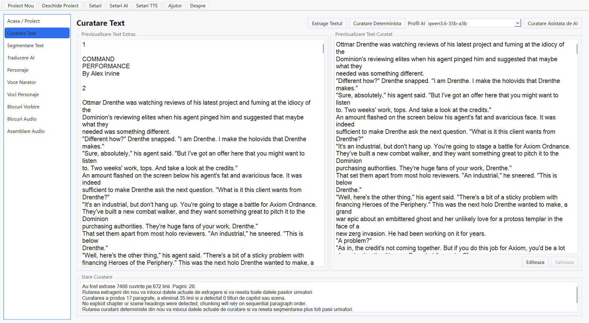
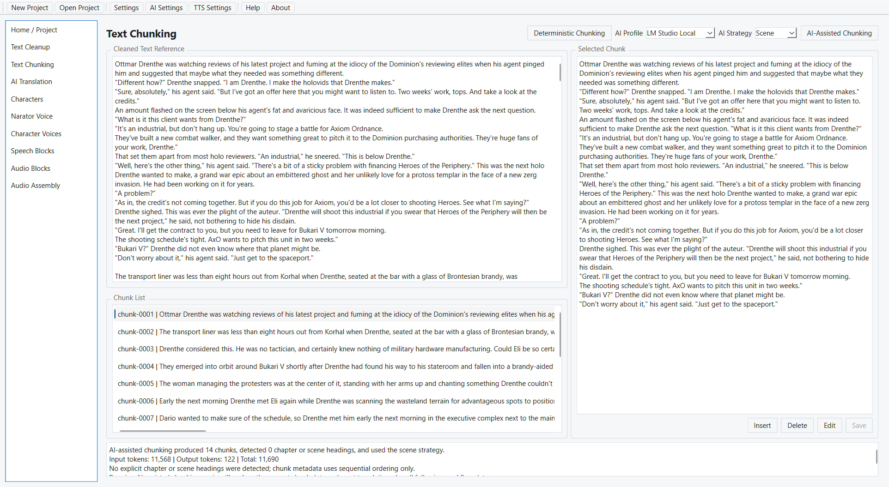
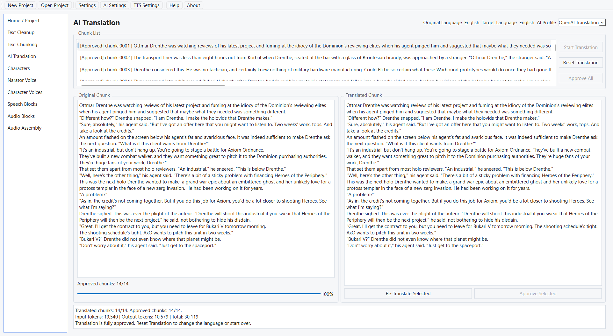
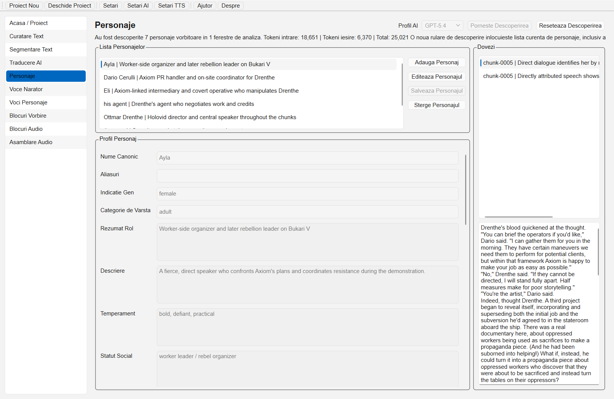
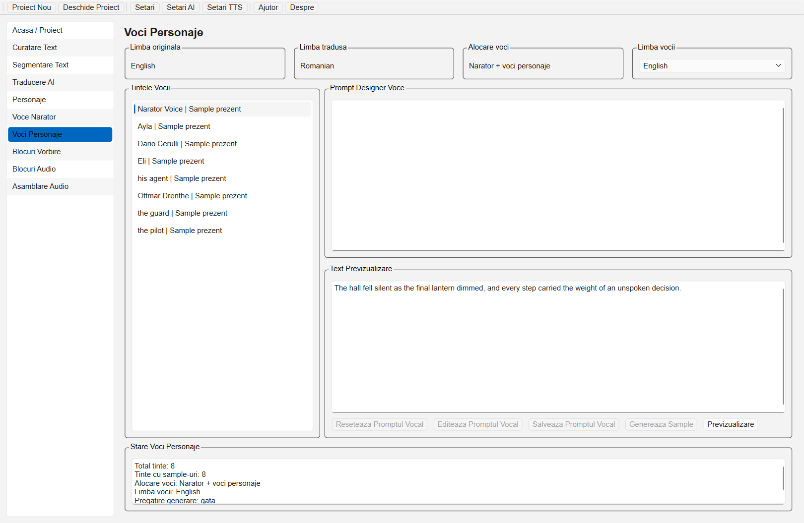
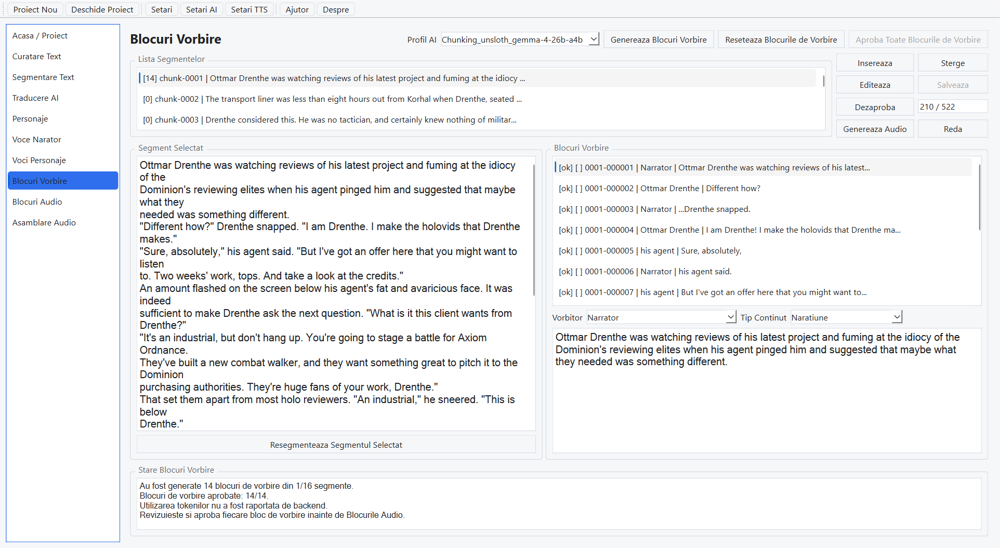
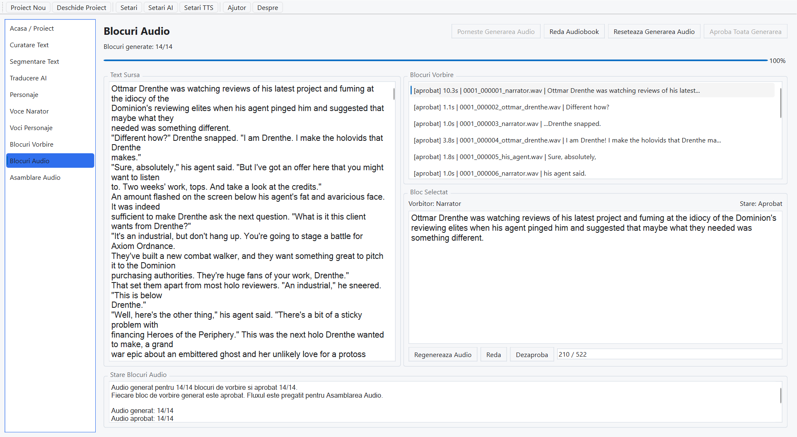
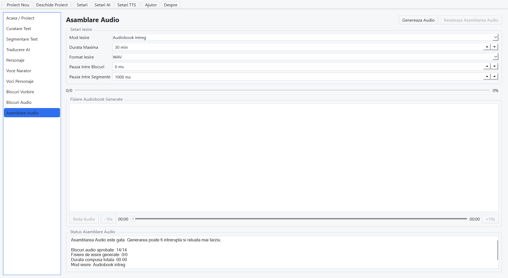

Bun venit
Versiune ajutor: 1.5.3
Versiune aplicatie: 1.5.3
Creator: Eng. Dipl. Dan Dumitru Pasare
Contact: pasaredan1979@gmail.com
AudioMancer transforma un text de carte sau poveste in fisiere audio pentru audiobook. Fluxul este impartit in pagini clare: proiect, curatare text, segmentare, traducere optionala, personaje, voci, blocuri de vorbire, blocuri audio si asamblare audio.
Lucreaza paginile din bara stanga de sus in jos. Apasa butoanele de generare, aprobare sau salvare numai dupa ce ai verificat textul si sunetul afisat. AudioMancer pastreaza cat mai mult din munca deja facuta: editarile locale de segment, traducere, personaj, voce, Bloc de vorbire sau Bloc audio reseteaza numai inregistrarile afectate, iar regenerarile complete din amonte sterg datele dependente.
Scene Ambience poate adauga intr-o scena blocuri sonore individuale ordonate. Fiecare bloc ambiental are prompt si prompt negativ, iar durata foloseste setarea Scene Ambience din Setari TTS, astfel incat poti construi atmosfera din surse sonore simple, nu dintr-un singur prompt complex. Blocurile de vorbire pot genera si reda audio pentru blocul selectat direct din pagina, Blocurile audio pot genera WAV pentru narator, personaje si Scene Ambience, iar Asamblarea audio poate previzualiza si include ambience mixat in audiobook-ul final.
Setari include teme luminoase si intunecate, teme personalizate, font separat pentru controalele interfetei si pentru ferestrele mari de text, pasi configurabili pentru rotita mouse-ului, plus import si export de teme in format JSON. Voce narator si Voci personaje pot importa esantioane WAV validate impreuna cu textul introdus de operator. Setari AI si Setari TTS folosesc acelasi flux Anuleaza, Salveaza si OK.

Ce este necesar
AudioMancer poate folosi modele AI online sau locale pentru text, dar generarea audio este disponibila in aplicatia curenta numai prin VoiceWeaver.
- VoiceWeaver este obligatoriu pentru audio. Instaleaza VoiceWeaver pe acelasi calculator sau pe un calculator din aceeasi retea.
- OpenAI poate fi folosit pentru curatare, segmentare, traducere, personaje si blocuri de vorbire.
- LM Studio poate fi folosit pentru aceleasi etape text, daca modelul local este incarcat si serverul API este pornit.
- OpenAI si LM Studio nu genereaza audio direct in AudioMancer; ele pregatesc textul si structura pentru VoiceWeaver.
Limbile tinta pentru traducere sunt: engleza, romana, japoneza, coreeana, chineza, germana, franceza, rusa, portugheza, spaniola si italiana. Limba audio urmeaza limba aleasa pentru proiect pe pagina Acasa si necesita modele sau voci VoiceWeaver compatibile cu acea limba.
Instalare si pornire
Windows
- Descarca arhiva zip AudioMancer pentru Windows.
- Click dreapta pe arhiva si alege Extract All / Extrage tot.
- Deschide dosarul extras.
- Porneste
AudioMancer.exesauStart-AudioMancer.cmd.
Ubuntu
- Descarca arhiva AudioMancer pentru Ubuntu.
- Extrage arhiva intr-un dosar unde ai drept de scriere.
- Ruleaza scriptul de pornire inclus in livrare.
- Verifica in Setari ca limba si tema interfetei sunt corecte.
Setari
Fereastra Setari controleaza limba interfetei, sunetul de finalizare, pasii de derulare ai rotitei mouse-ului si tema vizuala folosita in timpul rularii. Schimbarea limbii actualizeaza interfata si ghidul de ajutor corespunzator.
- Alege limba interfetei.
- Alege o tema inclusa, de exemplu Default Light, Default Dark sau Dark Contrast.
- Activeaza sau dezactiveaza sunetul de finalizare.
- Seteaza Pasi derulare intre 1 si 5 pentru cate linii se misca panourile comune de text si liste la fiecare pas al rotitei mouse-ului. Valoarea implicita este 1.
- Foloseste Apply pentru salvare si actualizare fara inchiderea ferestrei, sau OK pentru salvare si inchidere.
Teme personalizate
Temele incluse pot fi duplicate in teme personalizate. O tema personalizata permite schimbarea numelui, fontului pentru etichete si controale, fontului pentru ferestrele mari de text si rolurilor de culoare folosite de interfata. Fontul pentru ferestrele de text este util cand textul cartii trebuie sa fie mai mare sau mai lizibil fara marirea tuturor butoanelor.
- Creeaza sau duplica o tema personalizata.
- Alege familia si dimensiunea fontului pentru controalele interfetei.
- Alege familia si dimensiunea fontului pentru ferestrele de text.
- Editeaza rolurile de culoare si verifica zona de previzualizare.
- Apasa Apply sau OK pentru a salva tema selectata in
settings.json.
Foloseste Export pentru a salva o tema personalizata ca fisier JSON portabil, sau Import pentru a adauga o tema JSON in instalarea curenta. Daca identificatorul temei exista deja, AudioMancer adauga automat un sufix unic pentru copia importata.

Setari AI
Alege furnizorul AI pentru etapele text. Poti folosi OpenAI online sau LM Studio local. Pentru proiecte lungi, foloseste modele cu fereastra context mare si pastreaza limite de raspuns suficiente. Pentru modelele OpenAI online ai nevoie de o cheie API obtinuta din contul tau OpenAI. Apasa Salveaza pentru a pastra modificarile fara inchiderea ferestrei sau OK pentru a salva si inchide.

Profiluri recomandate OpenAI
| Etapa | Model recomandat | Setari utile |
|---|---|---|
| Curatare text | gpt-5.4-nano |
Temperatura 0.1, context 32k, raspuns 16k. |
| Segmentare text | gpt-5.4-mini |
Temperatura 0.0, context 32k, raspuns 16k. |
| Traducere AI | gpt-5.5 |
Temperatura 0.3, context 64k sau mai mult, raspuns 32k. |
| Personaje | gpt-5.4 |
Temperatura 0.1, context 64k, raspuns 24k. |
| Blocuri de vorbire | gpt-5.4 |
Temperatura 0.0, context 64k, raspuns 32k. |
Profiluri recomandate LM Studio
| Etapa | Model recomandat | Setari utile |
|---|---|---|
| Curatare text | mistralai/mistral-small-3.2 |
Fallback: openai/gpt-oss-20b. Temperatura 0.1. |
| Segmentare text | qwen/qwen3-30b-a3b-2507 |
Temperatura 0.0, context cat mai mare. |
| Traducere AI | google/gemma-3-27b |
Temperatura 0.3; foloseste bucati mai mici daca memoria GPU este limitata. |
| Personaje | qwen/qwen3-30b-a3b-2507 |
Temperatura 0.1; verifica manual numele si rolurile. |
| Blocuri de vorbire | qwen/qwen3-30b-a3b-2507 |
Temperatura 0.0; verifica vorbitorii inainte de audio. |
Pastreaza cheia API OpenAI privata si introdu-o numai in fereastra Setari AI din AudioMancer.
Setari TTS
Setarile TTS configureaza conexiunea cu VoiceWeaver. Introdu adresa calculatorului unde ruleaza VoiceWeaver, portul API si optiunile implicite pentru vocile folosite in proiect. Aici setezi si valorile implicite pentru generarea Scene Ambience dupa ce Blocurile de vorbire creeaza prompturile ambientale. Apasa Salveaza pentru a pastra modificarile fara inchiderea ferestrei sau OK pentru a salva si inchide.
- Foloseste Test Connection pentru a descoperi modelele VoiceWeaver disponibile.
- Alege None, Deschideri si inchideri sau Deschideri, inchideri si schimbari de scena.
- Seteaza durata blocurilor Scene Ambience si numarul maxim de blocuri ambientale pe secventa.
- Seteaza guidance, numarul de pasi si seed-ul pentru modelul sound-prompt. Valoarea Random foloseste seed aleator.
- Activarea Scene Ambience pentru Blocuri de vorbire este controlata de politica Scene Ambience Placement.

Proiecte
Creeaza sau deschide un proiect din pagina Acasa. Fiecare proiect contine textul sursa, fisierele generate, aprobari si exporturi. Pentru carti lungi, foloseste un dosar dedicat pentru fiecare proiect.
Panoul compact Acasa arata starea de finalizare pentru fiecare faza. Dupa ce o faza este gata, poti exporta documentele aferente: text curatat, segmente, traduceri, personaje si Blocuri de vorbire. Butonul Export Project ZIP salveaza o copie completa a proiectului.
Exemplu flux manual
Acest exemplu arata un flux aproape complet manual. Foloseste-l cand vrei ca AudioMancer sa administreze fisierele proiectului, progresul verificarii, vocile, audio generat si exporturile, dar vrei sa decizi manual segmentele de text si Blocurile de vorbire.
- Creeaza un proiect din Acasa / Proiect, selecteaza fisierul sursa, alege limba de traducere si stilul audio, apoi apasa Start Project.
- Deschide Curatare text, ruleaza curatarea determinista, editeaza manual textul curatat daca este nevoie, apoi aproba rezultatul.
- Deschide Segmentare text. Pentru o structura complet manuala, foloseste Insert pentru primul segment, introdu sau lipeste textul dorit si salveaza. Selecteaza un segment si apasa din nou Insert pentru a adauga urmatorul segment dupa cel curent.
- Foloseste Edit, Save si Delete in Segmentare text pana cand lista de segmente corespunde ordinii dorite a cartii.
- Ruleaza Traducere AI cand vrei o traducere sau o rescriere/adaptare AI in aceeasi limba. Daca nu este nevoie de traducere, continua numai dupa aprobarea segmentelor existente.
- Deschide Personaje. Ruleaza descoperirea sau adauga/editeaza manual personajele. Confirma nume, aliasuri, indiciu de gen, indiciu de varsta, prompt de definitie vocala si dovezi, apoi aproba lista.
- Deschide Voce narator. Genereaza sau editeaza profilul naratorului, creeaza sau importa mostra WAV, ascult-o si selecteaz-o.
- Deschide Voci personaje cand proiectul foloseste voci de personaje. Genereaza sau importa mostrele disponibile; poti continua si daca numai o parte dintre personaje au deja mostre utilizabile.
- Deschide Blocuri de vorbire. Selecteaza primul segment sursa, apasa Insert, alege vorbitorul si tipul de continut, introdu textul si salveaza. Continua sa inserezi dupa blocul selectat pana cand segmentul contine naratiunea, dialogul, pauzele, ambience-ul si indicatiile dorite.
- Foloseste Edit, Delete, Approve, Generate Audio si Play/Stop pe Blocurile de vorbire selectate pentru verificare pe rand, fara pierderea selectiei curente.
- Deschide Blocuri audio pentru a genera orice blocuri vorbite aprobate ramase, asculta fisierele WAV, regenereaza blocurile slabe, apoi aproba audio.
- Deschide Asamblare audio, alege metoda de compunere, genereaza iesirea WAV finala si verifica fisierele cu controalele de redare.
- Revino la Acasa / Proiect pentru exporturi text, arhive ZIP cu voci, arhive ZIP cu Asamblare audio sau arhiva ZIP completa a proiectului.
Curatare text
Curatarea elimina artefacte de OCR, spatii gresite si structuri care incurca etapele urmatoare. Poti folosi curatare locala sau AI, apoi verifici rezultatul inainte de aprobare.
- Extrage textul din documente acceptate.
- Ruleaza curatare determinista sau curatare asistata AI; pentru o rulare AI noua, adauga reguli optionale suplimentare cand apare caseta de instructiuni.
- Editeaza direct textul curatat pentru corectii manuale, imbunatatiri sau repararea OCR. Confirma mesajul de impact inainte de editare deoarece salvarile pot afecta datele etapelor urmatoare.
- Aproba textul curatat numai dupa verificare; aprobarea deblocheaza Segmentare text.
- Trage separatorul dintre previzualizarea textului extras si textului curatat; fiecare previzualizare pastreaza cel putin o treime din latimea paginii.
- Intrerupe operatia si continua mai tarziu din acelasi proiect.

Segmentare text
Segmentarea imparte cartea in bucati mai usor de procesat. Bucatile aprobate sunt folosite pentru traducere, descoperire personaje si blocuri de vorbire.
- Genereaza segmente determinist sau cu asistenta AI.
- Pentru o rulare AI noua de segmentare, adauga reguli optionale suplimentare cand apare caseta de instructiuni cu word wrap.
- Alege strategia AI: Paragraph pentru ferestre stabile de paragrafe, Meaning pentru unitati semantice sau Scene pentru limite apropiate de scene.
- Inspecteaza fiecare segment generat.
- Editeaza rezultatul generat cand textul sau impartirea trebuie corectate manual. Confirma mesajul de impact inainte de editare deoarece salvarile pot afecta datele etapelor urmatoare.
- Foloseste Insert pentru a adauga un segment gol dupa segmentul selectat, apoi salveaza textul dorit in segmentul nou.
- Foloseste Delete pentru a elimina segmentul selectat cand nu trebuie sa continue in etapele urmatoare.
- Confirma inserarile si stergerile numai dupa ce citesti mesajul de impact. AudioMancer pastreaza traducerile, Blocurile de vorbire si Blocurile audio neafectate unde este posibil, dar reseteaza Asamblarea audio deoarece ordinea continutului final s-a schimbat.
- Aproba segmentele pentru a debloca traducerea, personajele si Blocurile de vorbire.
- Trage separatorul dintre zona de referinta/lista si previzualizarea segmentului selectat; fiecare parte pastreaza cel putin o treime din latimea paginii.
- Intrerupe segmentarea si continua mai tarziu din acelasi proiect.

Traducere AI
Traducerea AI este optionala si este gandita ca traducere literara: pastreaza tonul, dialogul, vocea personajelor, ritmul narativ si sensul, nu doar cuvintele. Foloseste-o daca vrei sa produci audiobook-ul intr-o alta limba. Verifica manual segmentele traduse, mai ales numele, dialogul si formulele regionale.
- Limbile tinta acceptate sunt engleza, romana, japoneza, coreeana, chineza, germana, franceza, rusa, portugheza, spaniola si italiana.
- Genereaza traducerea pe segmente, cu jurnal AI optional daca este activat in setari.
- Adauga reguli optionale de traducere in caseta cu text incadrat pe randuri inainte de o traducere noua sau de retraducerea segmentului selectat.
- Inspecteaza fiecare segment tradus impreuna cu sursa.
- Editeaza manual textul tradus inainte de aprobare.
- Aproba segmente individuale dupa verificare.
- Reporneste traducerea cand schimbi profilul AI sau vrei o noua varianta literara.
- Intrerupe traducerea si continua mai tarziu din acelasi proiect.

Personaje
Pagina Personaje identifica naratorul si personajele din text. Verifica lista si corecteaza numele, aliasurile sau descrierile inainte de alocarea vocilor.
- Descopera naratorul si personajele din segmente aprobate sau traduceri aprobate.
- Adauga reguli optionale pentru Descoperirea Personajelor in caseta de prompt cu incadrare automata inainte de o rulare noua.
- Revizuieste nume, aliasuri, indicii de varsta/gen, rol, stil de vorbire si dovezi din text.
- Editeaza personajele cand modelul AI combina, omite sau eticheteaza gresit un vorbitor. Blocurile de vorbire atribuite revin la starea neaprobata pentru verificare.
- Adauga manual personaje lipsa sau sterge rezultate false. Stergerea unui personaj muta Blocurile de vorbire afectate pe Narator, le marcheaza neaprobate si reseteaza numai Blocurile audio aferente.
- Regeneraza definitii de voce dedicate cand descrierea nu este suficient de buna.
- Aproba lista de personaje inainte de lucrul cu vocile.
- Trage separatorul dintre zona de lucru cu personaje si dovezi; fiecare parte pastreaza cel putin o treime din latimea paginii.
- Intrerupe descoperirea personajelor si continua mai tarziu.

Voce narator
Alege vocea principala pentru narator. Testeaza mostra audio si pastreaza vocea consistenta pentru toate capitolele aceluiasi proiect.
- Inspecteaza profilurile de narator disponibile si selectia curenta.
- Foloseste Genereaza Profiluri Narator pentru sugestii AI editabile, cu reguli optionale de profil intr-o caseta cu text incadrat pe randuri inainte de generare.
- Editeaza promptul naratorului, textul de previzualizare si descrierea vocii.
- Genereaza o mostra VoiceWeaver pentru limba audio a proiectului.
- Reda si opreste mostra direct in pagina.
- Foloseste butonul Selecteaza deasupra listei de profiluri pentru mostra finala folosita in etapele urmatoare.
- Regenereaza mostra daca vocea nu se potriveste cartii.
- Maximizeaza fereastra aplicatiei pentru ca panourile Prompt proiectare voce si Text previzualizare sa primeasca automat aceeasi inaltime extinsa.
- Trage separatorul dintre lista de profiluri si editor; lista compacta pastreaza cel putin o cincime din latimea paginii si editorul cel putin o treime.
- Intrerupe generarea mostrei si continua mai tarziu.

Voci personaje
Aloca voci personajelor. Pentru proiectele cu un singur narator, pastreaza personajele pe vocea naratorului. Pentru proiectele cu mai multe voci, verifica fiecare mostra inainte de generare.
- Selecteaza fiecare tinta de voce din lista de personaje.
- Revizuieste promptul primit din Descoperire personaje.
- Editeaza promptul si textul de previzualizare inainte de generarea mostrei.
- Foloseste Genereaza Sample-uri Personaje pentru a regenera mostre pentru toate tintele curente de personaje.
- Genereaza, reda, opreste si regenereaza mostre VoiceWeaver pentru fiecare personaj.
- Schimbarea vocii unui personaj pastreaza Blocurile de vorbire si randurile Blocurilor audio, apoi sterge doar audio-ul generat care foloseste acea tinta de voce. Schimbarea vocii naratorului sterge numai audio-ul de narator.
- Aproba sau continua revizuirea alocarilor de voci.
- Reutilizeaza automat vocea naratorului in modul cu acelasi narator.
- Trage separatorul dintre lista de tinte si editor; lista pastreaza cel putin un sfert din latimea paginii si editorul cel putin o treime.
- Intrerupe generarea mostrelor si continua mai tarziu.

Blocuri de vorbire
Blocurile de vorbire transforma segmentele aprobate in unitati pregatite pentru audio. Verifica vorbitorul, textul, contorul de caractere, pauzele, indicatiile si blocurile Scene Ambience inainte de a aproba blocurile. Poti genera si asculta audio pentru blocul selectat fara sa treci pe pagina Blocuri audio.
- Genereaza Blocuri de vorbire pentru fiecare segment aprobat.
- Foloseste politica Scene Ambience Placement din Setari TTS inainte de generare sau reimpartirea segmentului selectat pentru a decide daca se creeaza blocuri ambientale.
- Adauga reguli optionale pentru Blocuri de vorbire in caseta de prompt cu incadrare automata inainte de generare noua sau reimpartirea segmentului selectat.
- Inspecteaza vorbitorul, tipul blocului, textul, durata pauzelor, indicatiile si campurile Scene Ambience.
- Scene Ambience este salvat ca blocuri separate ordonate. Fiecare bloc ambiental trebuie sa descrie o singura sursa sonora simpla sau un tip de sunet strans legat, nu un mix compus.
- Editeaza promptul, promptul negativ si durata unui bloc Scene Ambience in aceeasi zona de detalii folosita pentru blocurile de narator si personaje. Generarea Blocurilor audio normalizeaza durata sunetului la durata Scene Ambience din Setari TTS.
- Editeaza blocurile selectate cand textul sau atribuirea vorbitorului trebuie corectate. Daca blocul selectat are deja audio generat, avertismentul de impact apare cand apesi Edit, inainte ca editorul sa fie deblocat.
- Foloseste contorul blocului selectat pentru a compara lungimea textului curent cu limita modelului TTS activ.
- Insereaza sau sterge blocuri pentru a repara dialogul, pauzele sau fluxul narativ. Inserarea selecteaza blocul inserat; stergerea selecteaza urmatorul bloc ramas sau randul anterior cand blocul sters era ultimul.
- Editarea, salvarea, inserarea, stergerea, schimbarea aprobarii, reimprospatarea dupa generare si reimpartirea segmentului selectat pastreaza cursorul, selectia marcata si pozitiile de derulare orizontala si verticala din textul segmentului selectat. Inserarea selecteaza in continuare blocul inserat, iar stergerea selecteaza urmatorul sau anteriorul bloc ramas.
- Reimparte segmentele selectate cand structura nu este utilizabila.
- Aproba blocuri individuale sau foloseste aprobare globala dupa verificare. Pe un bloc aprobat, acelasi buton pentru blocul selectat devine Dezaproba si pastreaza randul selectat.
- Foloseste Generate Audio si Play/Stop pe blocul aprobat selectat pentru a previzualiza sunetul fara sa parasesti pagina.
- Editarea, stergerea, reimpartirea sau schimbarea vorbitorului reseteaza numai Blocul audio afectat. Inserarea, aprobarea sau dezaprobarea unui Bloc de vorbire pastreaza Blocurile audio generate si reseteaza Asamblarea audio.
- Reseteaza Blocurile de vorbire cand se schimba textul, traducerea, personajele sau modul de voce.
- Trage separatorul dintre Segment selectat si Blocuri de vorbire; fiecare panou de jos pastreaza cel putin o treime din latimea paginii.
- Intrerupe generarea si continua mai tarziu fara pierderea blocurilor aprobate.

Blocuri audio
Pagina Blocuri audio trimite blocurile aprobate catre VoiceWeaver si salveaza fisiere WAV. Blocurile vorbite folosesc vocea naratorului sau a personajului. Blocurile Scene Ambience aprobate pot fi generate prin ruta sound-prompt cand selectorul Scene Ambience Audio este pornit. Daca textul, vocea, promptul, durata sau parametrii se schimba, AudioMancer marcheaza fisierele vechi ca neactualizate.
- Genereaza WAV pentru Blocurile de vorbire aprobate si vorbite.
- Foloseste selectorul Scene Ambience Audio pentru a include sau sari peste blocurile ambientale aprobate in generarea Blocurilor audio.
- Genereaza WAV-uri Scene Ambience din prompt si prompt negativ, folosind durata Scene Ambience din Setari TTS.
- Foloseste Start Audio Generation pentru a continua dupa adaugarea sau stergerea Blocurilor de vorbire. Blocurile audio deja generate sunt sarite chiar daca nu sunt inca aprobate; se genereaza numai blocurile aprobate curente fara audio.
- Nu trimite la TTS blocurile de pauza si indicatie.
- Imparte textul prea lung cand este nevoie si reuneste partile valide intr-un singur bloc audio.
- Previzualizeaza audio generat cu controale Play/Stop.
- Regenereaza blocuri selectate dupa corectii de text, prompt sau voce. O regenerare pentru un singur bloc nu atinge celelalte Blocuri audio.
- Aproba audio numai dupa ascultare.
- Reseteaza blocurile audio cand intrarile anterioare devin neactualizate.
- Trage separatorul dintre Text sursa si zona de verificare blocuri; fiecare parte pastreaza cel putin o treime din latimea paginii.
- Intrerupe generarea si continua mai tarziu din acelasi proiect.

Asamblare audio
Asamblarea audio combina blocurile WAV aprobate in fisiere finale lungi. Poti asculta fisierele generate direct in pagina, poti derula cu bara de progres si poti folosi butoanele de salt rapid.
Scene Mix Previews listeaza grupurile Scene Ambience disponibile. Genereaza sau actualizeaza mixul selectat pentru a suprapune WAV-urile aprobate intr-un singur pat ambiental, apoi reda scena mixata inainte de asamblarea finala. Asamblarea finala foloseste acelasi mix cand Include Scene Ambience este activ.
- Apasa Play pentru a porni fisierul selectat; butonul devine Stop in timpul redarii.
- Foloseste -10s si +10s pentru derulare rapida.
- Trage de bara de progres pentru a sari la o pozitie anume.
- Dublu-click pe un fisier generat opreste redarea curenta si porneste acel fisier de la inceput.
- Alege modul de iesire: pe segment, parti limitate ca durata sau audiobook intreg.
- Configureaza pauza intre blocuri si pauza intre segmente.
- Genereaza si reda previzualizari Scene Mix pentru grupurile Scene Ambience aprobate.
- Genereaza fisiere WAV finale in dosarul
audiobook/al proiectului. - Reseteaza si regenereaza asamblarea cand setarile sau blocurile audio aprobate se schimba.
- Intrerupe asamblarea si continua mai tarziu cand intrarile curente inca se potrivesc.

Export
Exportul copiaza rezultatele proiectului intr-un dosar de livrare. Pagina Acasa poate exporta text curatat, segmente, traduceri AI, personaje si Blocuri de vorbire ca documente text. Poate exporta si arhive ZIP pentru mostre Voce narator, mostre Voci personaje si iesiri Asamblare audio. Arhivele de voce includ mostra WAV generata si un fisier text cu definitia vocii si textul de previzualizare; arhivele de Asamblare audio includ fisiere WAV plus un manifest cu metoda de compunere, lista fisierelor, durata si dimensiune. Verifica inainte ca toate etapele necesare sa fie aprobate si ca fisierele audio finale se pot reda corect.
Exporturile de documente devin disponibile numai dupa ce faza corespunzatoare a produs date aprobate. Foloseste lista de status de pe pagina Acasa pentru a vedea ce este complet, in asteptare sau in revizuire.
Probleme frecvente
- Nu se genereaza audio: verifica daca VoiceWeaver ruleaza si daca adresa din Setari TTS este accesibila.
- Modelul AI nu raspunde: verifica cheia OpenAI sau serverul LM Studio si modelul incarcat.
- Textul este impartit gresit: revino la Segmentare text si ajusteaza bucata afectata.
- Vocea este gresita: verifica alocarile din Voce narator si Voci personaje, apoi regenereaza blocurile afectate.
- Fisierul audio final este lung: foloseste bara de progres, dublu-click pe fisier si salturile de 10 secunde.
Glosar
- Segment: bucata de text curatat folosita de etapele AI.
- Bloc de vorbire: unitate text cu vorbitor, tip si instructiuni pentru audio.
- Bloc audio: fisier WAV generat pentru un bloc de vorbire.
- VoiceWeaver: serviciul TTS folosit de AudioMancer pentru generarea audio.
- Asamblare: combinarea blocurilor audio in fisiere finale de audiobook.